Mettre KoppaFoot sur l'écran d'accueil d'un Android, d'un iPhone ou d'un ordinateur, puis recevoir les notifications de tes matchs : voici comment faire, étape par étape, avec une image à chaque geste.
Édition septembre 2026·koppafoot.com
Au programme
00Avant de commencer Pourquoi installer KoppaFoot, et comment lire ce guide
01Sur un téléphone Android Avec Chrome : un bouton, une confirmation, c'est fait
02Sur un iPhone Avec Safari, par le bouton Partager
03Sur un ordinateur Avec Chrome ou Edge, KoppaFoot dans sa propre fenêtre
04Activer les notifications Convocations, invitations, buts en direct : être prévenu tout de suite
+Aide-mémoire et questions fréquentes L'installation en trente secondes, sur une page
Chapitre 00
Avant de commencer
KoppaFoot n'est pas dans le Play Store ni dans l'App Store : c'est le site koppafoot.com qui s'installe, directement depuis ton navigateur. Rien à télécharger, rien à mettre à jour, et l'icône est sur ton écran d'accueil comme n'importe quelle application.
Un toucherKoppaFoot s'ouvre depuis son icône, sans taper l'adresse ni chercher l'onglet.
Plein écranPlus de barre d'adresse ni de boutons du navigateur : toute la place pour tes matchs.
Les notificationsConvocations, invitations, buts en direct. Sur iPhone, elles n'existent que dans l'application installée.
Chapitre 01
Android
Avec Chrome (ou Samsung Internet, Edge).
Chapitre 02
iPhone, iPad
Avec Safari, l'application d'Apple.
Chapitre 03
Ordinateur
Avec Chrome ou Edge, sur Windows, Mac ou Linux.
Lis seulement le chapitre de ton appareil, puis le chapitre 04 pour les notifications.
Comment lire ce guide
Sur chaque image, un cadre orange numéroté te montre où toucher. Suis les numéros dans l'ordre.
Bouton à toucher
Dans le texte, le même numéro renvoie au même cadre : 123…
Captures et schémas
Les écrans de KoppaFoot sont de vraies captures de l'application.
Les fenêtres du navigateur et du téléphone (Chrome, Safari, l'écran d'accueil) changent d'une version à l'autre : elles sont dessinées et portent l'étiquette SCHÉMA. Chez toi, les mots et les couleurs peuvent varier un peu ; les gestes restent les mêmes.
L'exemple suiviOn accompagne Kafui Mensah, joueur de l'Avenir d'Adakpamé, déjà inscrit sur KoppaFoot. Son nom et ses équipes sont inventés pour l'exemple. Tu n'as pas encore de compte ? L'installation marche aussi avant de te connecter (chapitre 01, étape 5).
Chapitre 01
Sur un téléphone Android
Voici comment installer KoppaFoot avec Chrome. KoppaFoot te le propose lui-même : un bouton, une confirmation, et l'icône est sur ton écran d'accueil.
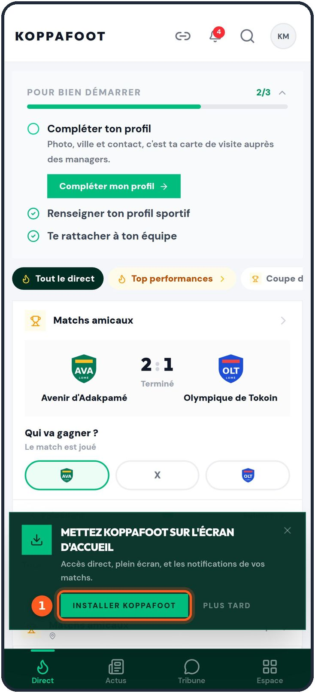
1Ouvre KoppaFoot dans Chrome
Ouvre Chrome, va sur koppafoot.com et connecte-toi comme d'habitude.
Quelques secondes plus tard, une carte verte apparaît en bas de l'écran : « Mettez KoppaFoot sur l'écran d'accueil ».
Touche 1Installer KoppaFoot.
Pas maintenant ?Plus tard range la carte pour un mois. Tu pourras installer quand tu veux depuis le menu de ton avatar (étape 4).
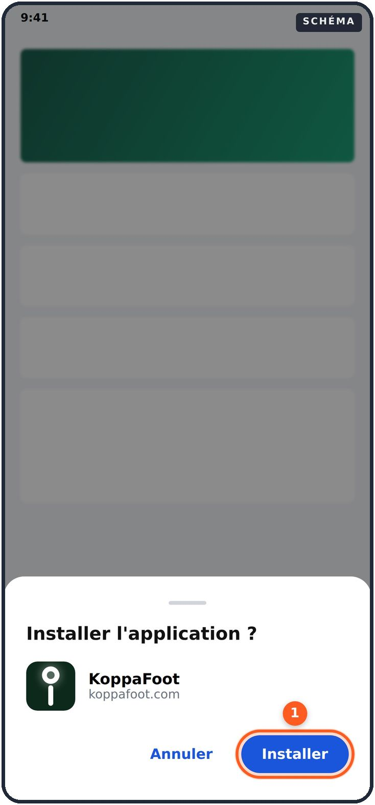
2Confirme l'installation
Chrome te demande : « Installer l'application ? », avec l'icône et le nom de KoppaFoot.
Touche 1Installer.
L'installation prend quelques secondes. Chrome te prévient quand c'est terminé.
SCHÉMACette fenêtre appartient à Chrome. Selon ta version, elle s'ouvre au milieu ou en bas de l'écran, et le bouton peut s'appeler Ajouter.
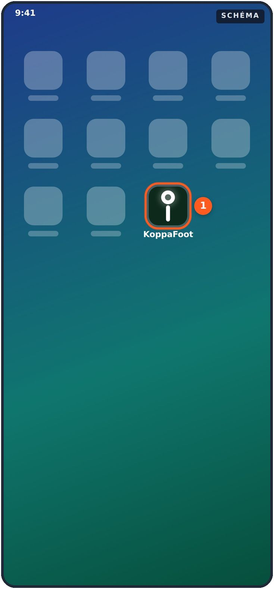
3Ouvre KoppaFoot depuis son icône
C'est fait : 1 l'icône KoppaFoot est sur ton écran d'accueil (ou dans la liste de tes applications, si ton écran d'accueil est plein).
Touche-la : KoppaFoot s'ouvre en plein écran, sans la barre de Chrome. Tu es toujours connecté.
Range-la bienAppuie longuement sur l'icône pour la déplacer où tu veux, à côté de tes applications préférées.
La carte n'est pas apparue ? Trois autres chemins
4Depuis le menu de ton avatar
En haut à droite, touche 1 ton avatar (tes initiales, ou ta photo).
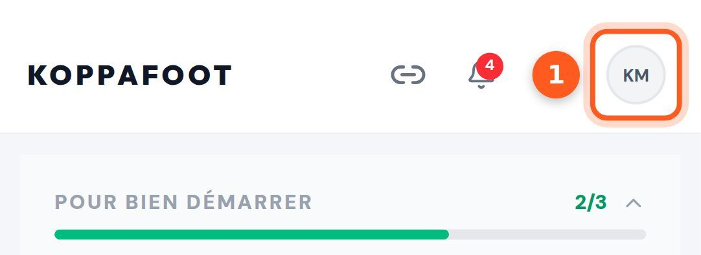
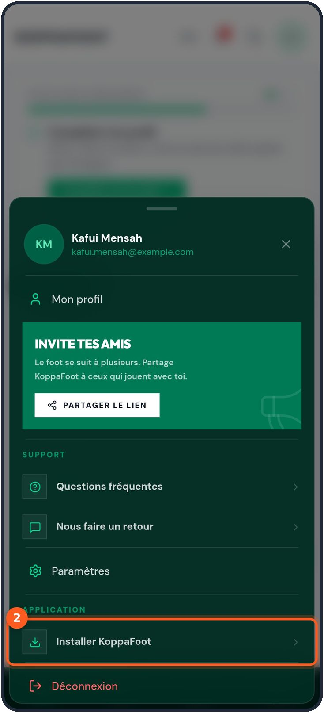
Ton menu s'ouvre depuis le bas de l'écran. Dans la partie Application, touche 2Installer KoppaFoot, puis confirme comme à l'étape 2.
La ligne a disparu ?La partie Application ne s'affiche que si l'installation est possible. Elle disparaît quand KoppaFoot est déjà installé : cherche l'icône sur ton écran d'accueil.
5Depuis la page de connexion
Pas encore connecté ? Sur la page Connexion, tout en bas, le cadre Installer KoppaFoot fait la même chose : touche 1Installer.
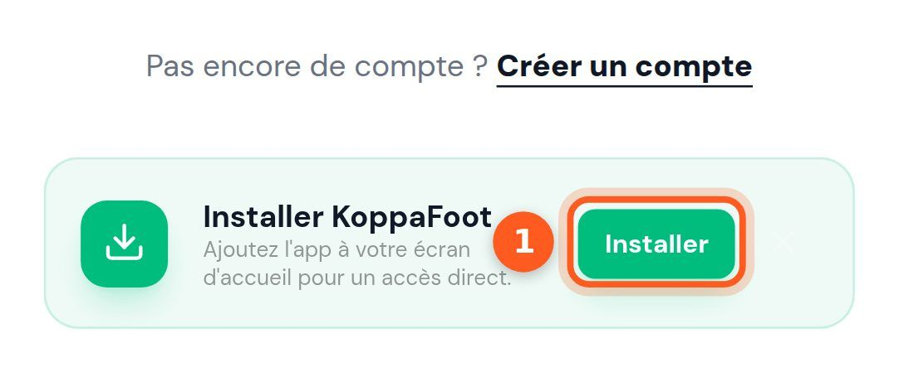
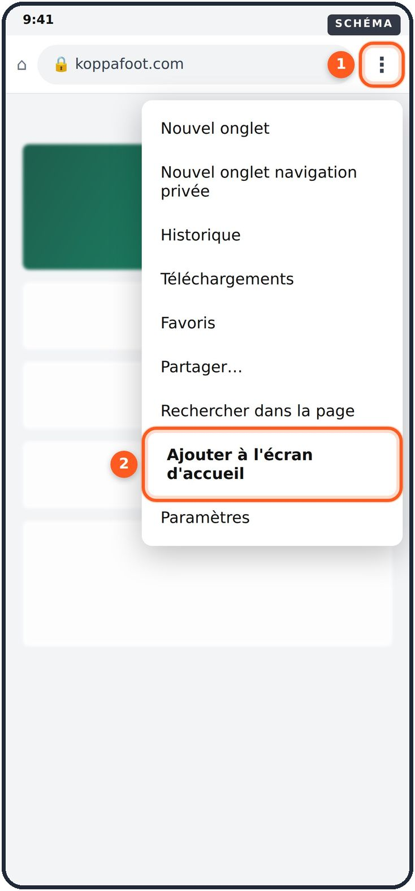
6Depuis le menu de Chrome
C'est le chemin qui marche toujours, même quand KoppaFoot ne propose rien.
Touche 1 les trois points, en haut à droite de Chrome.
Touche 2Ajouter à l'écran d'accueil (ou Installer l'application, selon ta version).
Confirme avec Installer.
Aucune de ces options ?Tu es peut-être en navigation privée (onglet sombre) : ouvre koppafoot.com dans un onglet normal. Ou KoppaFoot est ouvert dans une autre application (WhatsApp, Facebook…) : touche les trois points de cette page et choisis Ouvrir dans Chrome.
Chapitre 02
Sur un iPhone
Sur iPhone, pas de bouton « Installer » : Apple réserve l'installation au bouton Partager de Safari. Voici comment faire, en quatre touchers. C'est aussi ce qui débloque les notifications.
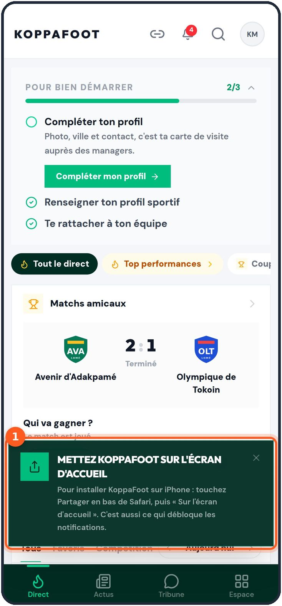
1Ouvre KoppaFoot dans Safari
Ouvre Safari (la boussole bleue), va sur koppafoot.com et connecte-toi.
Quelques secondes plus tard, 1 une carte verte te rappelle la marche à suivre : Partager, puis « Sur l'écran d'accueil ». La voici en détail.
Safari, pas une autre applicationSi tu as ouvert le lien depuis WhatsApp, Instagram ou Facebook, tu n'es pas dans Safari. Cherche le bouton Ouvrir dans Safari (souvent derrière ··· ou la boussole), puis recommence.
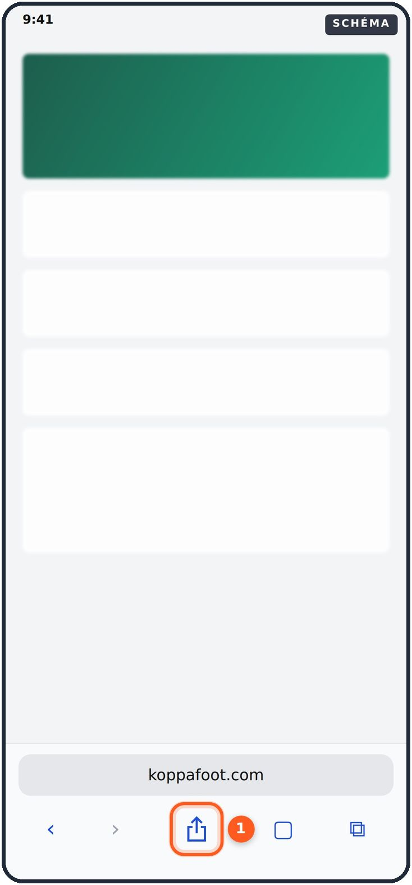
2Touche « Partager »
En bas de Safari, touche 1 le bouton Partager : un carré avec une flèche vers le haut.
Tu ne le vois pas ?Fais défiler la page un peu vers le haut : la barre de Safari réapparaît. Sur certains iPhone, la barre est en haut de l'écran, ou Partager est rangé derrière le bouton ···.
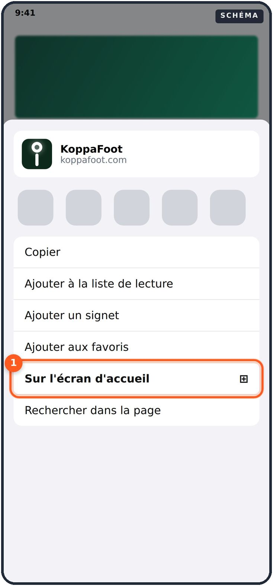
3Touche « Sur l'écran d'accueil »
La feuille de partage s'ouvre. Fais-la défiler vers le bas et touche 1Sur l'écran d'accueil (avec un petit + dans un carré).
Introuvable ?Tout en bas de la liste, Modifier les actions permet de l'ajouter, puis de la placer en haut pour la prochaine fois.
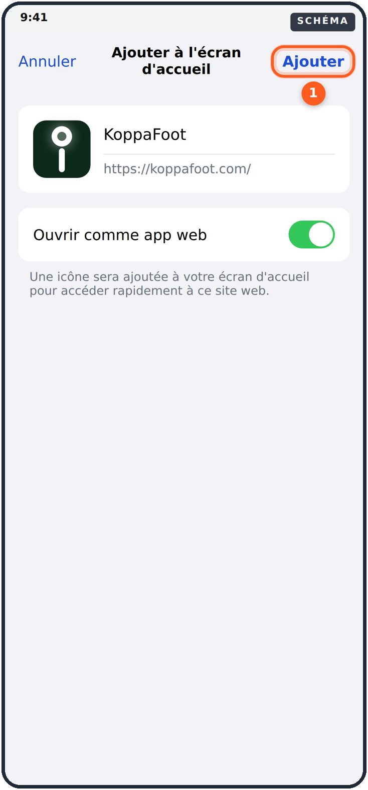
4Touche « Ajouter »
L'iPhone te montre l'icône et le nom KoppaFoot. Laisse le nom tel quel.
Si l'option Ouvrir comme app web est présente, laisse-la activée (en vert).
Touche 1Ajouter, en haut à droite.
5Ouvre KoppaFoot depuis son icône
L'icône 1KoppaFoot est sur ton écran d'accueil. Touche-la : l'application s'ouvre en plein écran, sur l'écran de lancement de KoppaFoot.
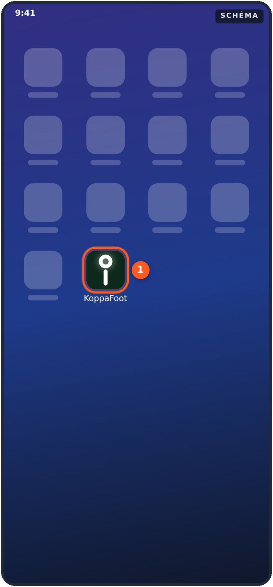
Ton écran d'accueil (schéma)L'écran de lancement de KoppaFoot
Connecte-toi une fois de plusSur iPhone, l'application installée ne partage pas la session de Safari : à la première ouverture, connecte-toi avec ton email (ou Google). Ensuite, tu restes connecté.
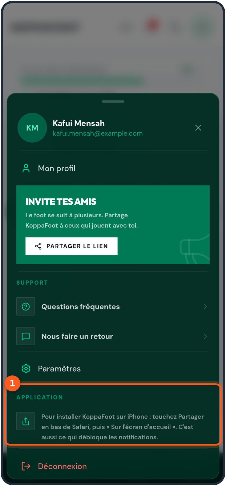
6Retrouver la marche à suivre
La carte verte est partie ? Touche ton avatar, en haut à droite : dans la partie 1Application, KoppaFoot te rappelle les deux gestes.
Ouvre toujours l'icônePour tes notifications, c'est important : sur iPhone, elles ne marchent que dans KoppaFoot ouvert depuis l'écran d'accueil, jamais dans Safari. Tout est expliqué au chapitre 04.
Sur iPadLes mêmes gestes : le bouton Partager est en haut, à droite de l'adresse.
Chapitre 03
Sur un ordinateur
Voici comment installer KoppaFoot avec Chrome ou Edge. Il s'ouvre alors dans sa propre fenêtre, sans onglets, et se lance depuis le menu Démarrer, le Dock ou le bureau.
1Touche « Installer KoppaFoot »
Ouvre koppafoot.com dans Chrome ou Edge et connecte-toi. Quelques secondes plus tard, la carte « Mettez KoppaFoot sur l'écran d'accueil » apparaît en bas à droite. Clique sur 1Installer KoppaFoot.
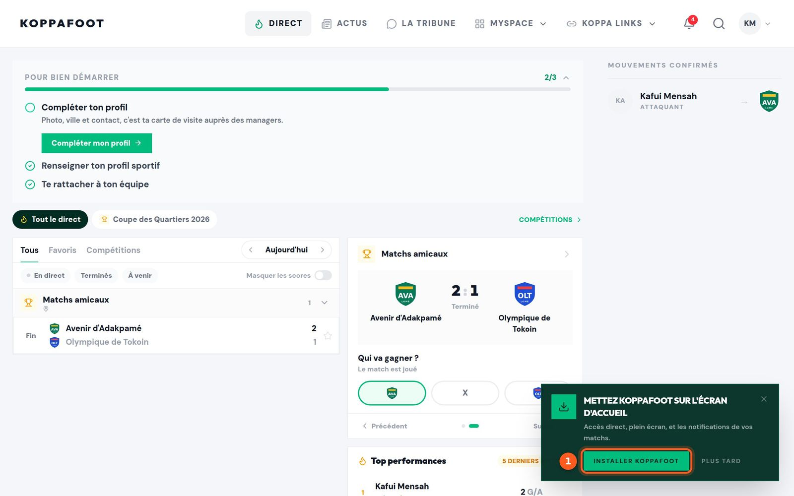
2Ou depuis le menu de ton avatar
Clique sur 1 ton avatar, en haut à droite, puis, dans la partie Application, sur 2Installer KoppaFoot.
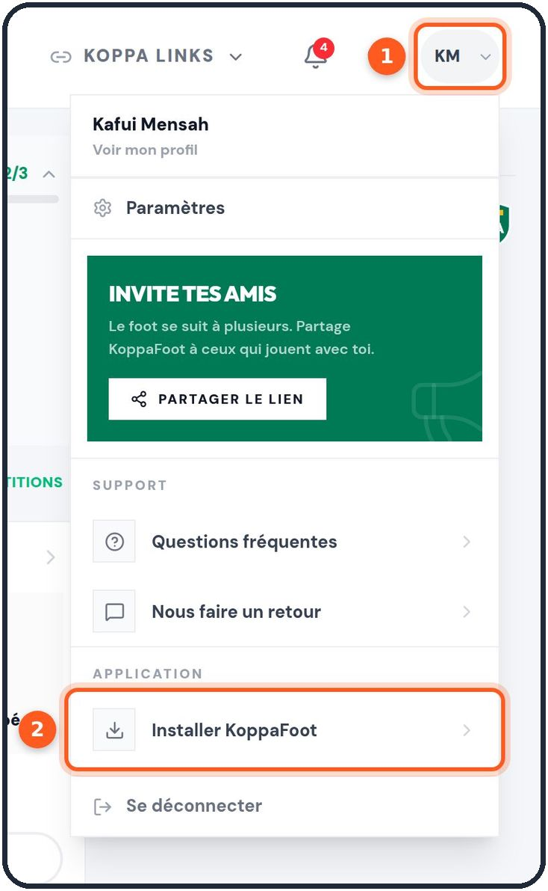
3Ou depuis la barre d'adresse
Dans la barre d'adresse, à droite, clique sur 1 la petite icône d'installation (un écran avec une flèche). La fenêtre Installer l'application ? s'ouvre : clique sur 2Installer. C'est aussi la fenêtre qui s'ouvre après les étapes 1 et 2.
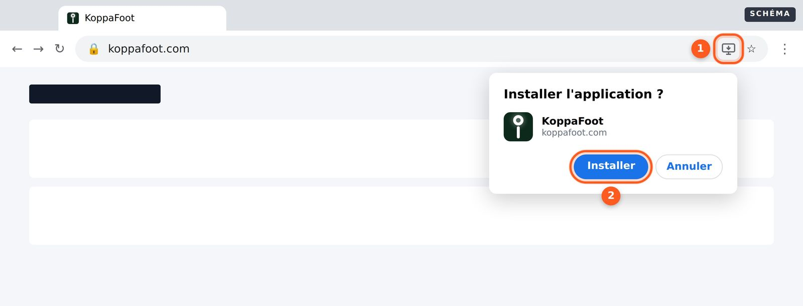
Et après ?KoppaFoot s'ouvre dans sa propre fenêtre. Pour le retrouver : le menu Démarrer sur Windows, le Launchpad ou le Dock sur Mac. Pas d'icône dans la barre d'adresse ? Ouvre le menu ⋮ du navigateur : l'installation y figure aussi (dans Chrome, sous Caster, enregistrer et partager ; dans Edge, sous Applications). Sur Mac avec Safari : menu Fichier → Ajouter au Dock.
Chapitre 04
Activer les notifications
Une convocation, une invitation, un défi, un but dans une compétition que tu suis : avec les notifications, ton téléphone te prévient tout de suite, même KoppaFoot fermé. Voici comment les activer.
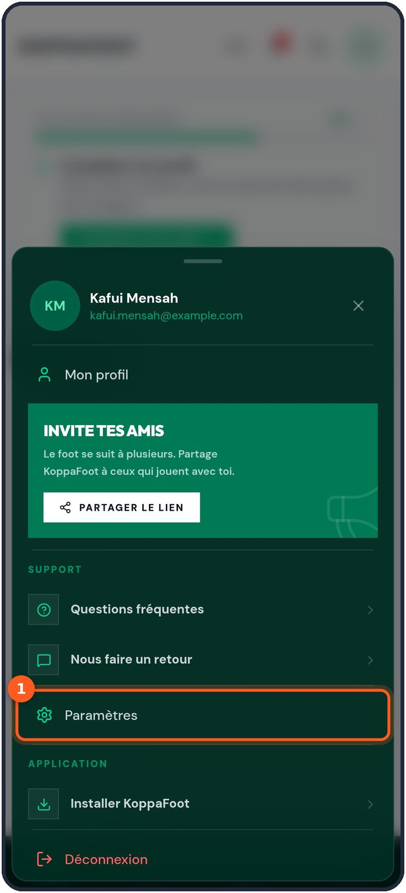
1Ouvre les Paramètres
Touche ton avatar, en haut à droite, puis 1Paramètres.
Sur iPhoneFais-le dans KoppaFoot ouvert depuis son icône (chapitre 02), pas dans Safari. Sinon, voir l'étape 5.
2Réponds « Oui » pour cet appareil
En haut de la page, dans Notifications, la ligne Sur cet appareil est sur Non. Touche 1Oui.
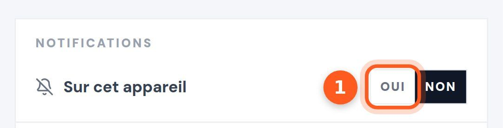
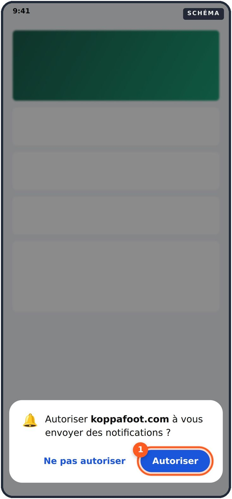
3Autorise KoppaFoot
Ton téléphone (ou ton navigateur) te demande si KoppaFoot peut t'envoyer des notifications.
Touche 1Autoriser.
Ne touche pas « Ne pas autoriser »Un refus est définitif pour ce téléphone : KoppaFoot ne pourra plus te redemander. Si c'est déjà fait, pas de panique, l'étape 6 explique comment revenir en arrière.
4C'est activé
1Oui est maintenant sélectionné et la petite cloche n'est plus barrée. Les notifications arrivent sur cet appareil.
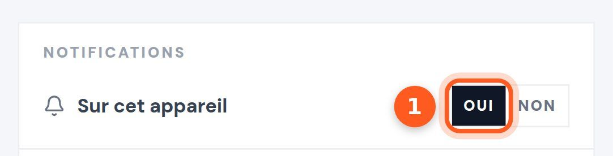
Un réglage par appareilActiver sur ton téléphone n'active pas ton ordinateur, et inversement : refais les étapes 1 à 3 sur chaque appareil où tu veux être prévenu. Pour arrêter, touche Non : seul cet appareil est concerné.
Cas particuliers
5Sur iPhone : « Disponible une fois l'application installée »
Ce message veut dire que tu es dans Safari : il n'y a pas de bouton Oui ni Non. Installe KoppaFoot (chapitre 02), ouvre-le depuis son icône, puis retourne dans Paramètres : cette fois, 1Oui est là.
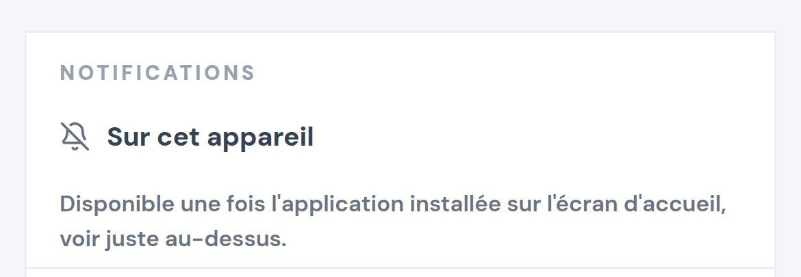
Dans Safari
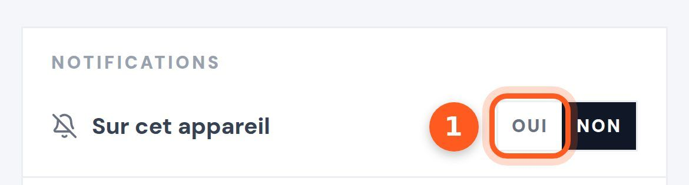
Dans KoppaFoot, ouvert depuis l'écran d'accueil
6« Bloquées dans les réglages du navigateur »
Ce message veut dire que Ne pas autoriser a été touché un jour. KoppaFoot ne peut plus rien demander : c'est toi qui dois rouvrir la porte, dans les réglages.
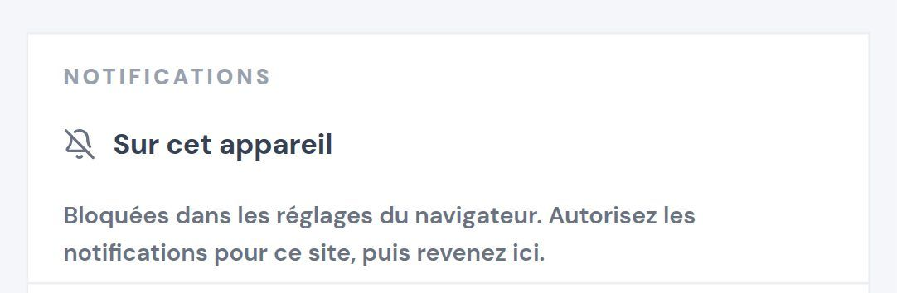
Appareil
Où autoriser les notifications
Android, application installée
Appui long sur l'icône KoppaFoot → Infos sur l'application → Notifications → activer.
Android, dans Chrome
À gauche de l'adresse, touche l'icône des réglages du site → Autorisations → Notifications → Autoriser.
iPhone
Application Réglages → Notifications → KoppaFoot → Autoriser les notifications.
Ordinateur
À gauche de l'adresse, clique sur l'icône des réglages du site → Notifications → Autoriser.
Reviens ensuite dans Paramètres et recharge la page : le bouton Oui est de retour. Touche-le.
iPhone, ensuite : ouvre toujours KoppaFoot depuis son icône, et connecte-toi une fois de plus.
Ordinateur : Chrome ou Edge → carte verte ou avatar → Installer KoppaFoot → Installer.
Notifications : avatar → Paramètres → Sur cet appareil → Oui → Autoriser.
Sur chaque appareil : le réglage des notifications est à refaire sur ton téléphone et sur ton ordinateur.
« Bloquées » : réglages du téléphone ou du navigateur → Notifications → Autoriser, puis Oui dans Paramètres.
Annexe
Questions fréquentes
Est-ce une vraie application ? Pourquoi pas le Play Store ou l'App Store ?
C'est le site KoppaFoot, installé comme une application : même icône, plein écran, notifications. Il ne passe pas par un store, s'installe en quelques secondes et prend très peu de place.
Faut-il la mettre à jour ?
Non. Chaque fois que tu l'ouvres, tu as la dernière version de KoppaFoot, comme sur le site.
Je ne vois ni la carte verte ni « Installer KoppaFoot ».
Trois raisons possibles : KoppaFoot est déjà installé (cherche l'icône, ou la liste de tes applications) ; tu es en navigation privée ; ou ton navigateur ne sait pas installer d'application. Sur Android et ordinateur, utilise Chrome ou Edge ; sur iPhone, Safari et le bouton Partager.
J'ai touché « Plus tard ». La carte reviendra ?
Oui, au bout d'un mois. Sans attendre : avatar → Application → Installer KoppaFoot.
Je dois me reconnecter dans l'application ?
Sur Android et ordinateur, en général non. Sur iPhone, oui, une fois : l'application installée ne partage pas la session de Safari.
Je ne reçois pas de notifications.
Vérifie, sur cet appareil, que Paramètres → Sur cet appareil est sur Oui. Sur iPhone, ouvre KoppaFoot depuis son icône, pas depuis Safari. Vérifie aussi que ton téléphone n'est pas en mode Ne pas déranger ou Concentration.
Quelles notifications vais-je recevoir ?
Ce qui te concerne directement (invitation, convocation, défi, réponse à ta candidature), la vie de tes équipes, les nouvelles de ce que tu suis, le direct des compétitions que tu suis, et, plus rarement, les annonces de l'équipe KoppaFoot. Les mêmes nouvelles restent aussi derrière la cloche, en haut de l'écran.
J'ai changé de téléphone.
Installe KoppaFoot sur le nouveau (chapitre 01 ou 02), puis réactive les notifications (chapitre 04) : elles sont liées à l'appareil, pas au compte.
Comment désinstaller KoppaFoot ?
Android : appui long sur l'icône → Désinstaller. iPhone : appui long sur l'icône → Supprimer l'app. Ordinateur : dans la fenêtre KoppaFoot, menu ⋮ → Désinstaller KoppaFoot. Ton compte, lui, ne bouge pas : tu le retrouves sur koppafoot.com.
Besoin d'aide ?
Touche ton avatar, puis, dans Support : Questions fréquentes, ou Nous faire un retour pour écrire à l'équipe KoppaFoot.